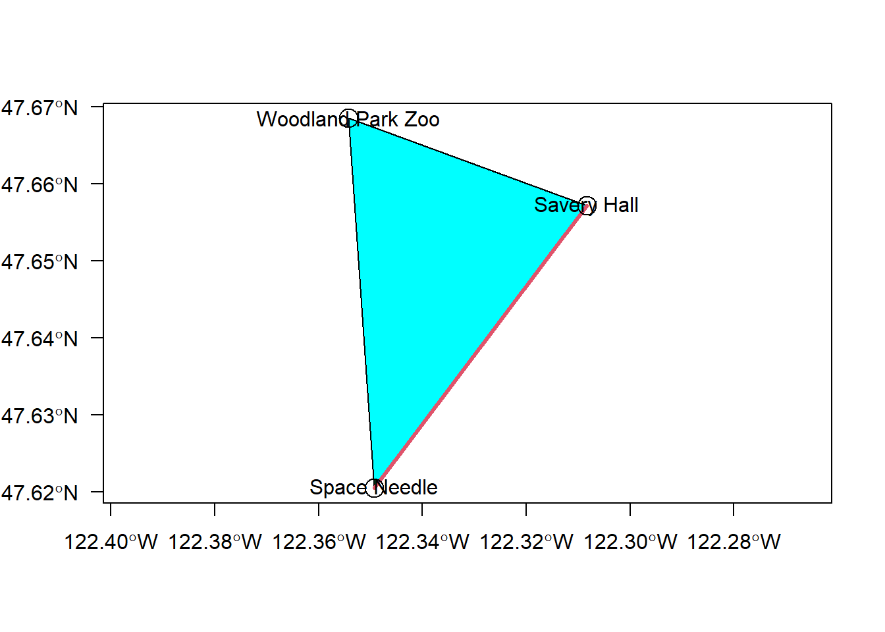

Chapter 3 Representation of spatial features
Vector (point, line, and polygon) features as used in the sf package are compliant with the Open Geospatial Consortium standard.
To start, let’s load the sf and dplyr packages .
library(sf)
library(dplyr)3.1 Points
Points are stored as X and Y coordinates. In the folliwing code chunk we make a sf data frame from one point at the longitude and latitude representing the Space Needle. The option crs = 4326 specifies to register the X and Y coordinates to WGS84 (EPSG code 4326). More attention will be paid to coordinate systems in Chapter 5.
snxy <- data.frame(name = "Space Needle", x = -122.3493, y = 47.6205)
space_needle <- st_as_sf(snxy, coords = c("x", "y"), crs = 4326)We can see a complete description of the data frame, which includes the geometry type, dimension, bounding box coordinates, spatial reference ID (“SRID”) and proj4 projection definition, and finally the contents of the data frame, incuding the column geometry that shows the longitude and latitude.
Importantly, the sf data frame is an extension of the data frame model. The data frame can consist of the same type of data you have been using in R, but with the addition of columns that contain OGC representations of vector features.
print(space_needle)## Simple feature collection with 1 feature and 1 field
## Geometry type: POINT
## Dimension: XY
## Bounding box: xmin: -122.3493 ymin: 47.6205 xmax: -122.3493 ymax: 47.6205
## Geodetic CRS: WGS 84
## name geometry
## 1 Space Needle POINT (-122.3493 47.6205)The coordinates of the point can be extracted using the st_coordinates() function:
st_coordinates(space_needle)## X Y
## 1 -122.3493 47.6205Let’s add the coordinates of Savery Hall:
shxy <- data.frame(name = "Savery Hall", x = -122.3083, y = 47.6572)
savery_hall <- st_as_sf(shxy, coords = c("x", "y"), crs = 4326)
# rbind() to put two points in one data frame
pts <- rbind(space_needle, savery_hall)View the data frame:
print(pts)## Simple feature collection with 2 features and 1 field
## Geometry type: POINT
## Dimension: XY
## Bounding box: xmin: -122.3493 ymin: 47.6205 xmax: -122.3083 ymax: 47.6572
## Geodetic CRS: WGS 84
## name geometry
## 1 Space Needle POINT (-122.3493 47.6205)
## 2 Savery Hall POINT (-122.3083 47.6572)View the points in coordinate space:
plot(pts$geometry, axes = TRUE)3.2 Linestrings
Linestrings are linear features created a single set of ordered pairs of points. We can use the set of points we created to generate a simple linestring sf data frame with two vertices:
# create a linestring sf data frame
lnstr <- st_sfc(st_linestring(st_coordinates(pts)), crs = 4326)As with the point data frame we can add columns:
lnstr <- as_tibble(lnstr) %>% mutate(od = "Space Needle, Savery Hall")And plot the points and linestring with base R graphics:
plot(pts$geometry, axes = TRUE)
text(x = st_coordinates(pts), labels = pts$name)
plot(lnstr$geometry, col = 2, add = TRUE)Of course, linestrings can have any number of vertices > 1. Bonus: How would you construct a set of linestrings representing distinct days of GPS data collected from one study subject?
3.3 Polygons
Polygons are ordered collections of XY coordinates with at least 4 vertices. In order for the polygon to “close,” the first and last vertices need to be at the same XY location.
Let’s add another point to our collection:
zooxy <- data.frame(name = "Woodland Park Zoo", x = -122.3543, y = 47.6685)
wp_zoo <- st_as_sf(zooxy, coords = c("x", "y"), crs = 4326)
# rbind() to put two points in one data frame
pts <- rbind(pts, wp_zoo)And construct a polygon using the coordinates of the set of three points and closed with a ccopy of the first point
(plygn <- st_sfc(st_polygon(list(st_coordinates(rbind(pts, space_needle)))), crs = 4326))## Geometry set for 1 feature
## Geometry type: POLYGON
## Dimension: XY
## Bounding box: xmin: -122.3543 ymin: 47.6205 xmax: -122.3083 ymax: 47.6685
## Geodetic CRS: WGS 84## POLYGON ((-122.3493 47.6205, -122.3083 47.6572,...Plotted with the other features:
plot(plygn, col = "cyan", axes = TRUE)
plot(lnstr$geometry, col = 2, add = TRUE, lwd = 3)
plot(pts$geometry, add = TRUE, cex = 2)
text(x = st_coordinates(pts), labels = pts$name)
3.4 Conclusion
It is more likely that you will be obtaining GIS data sources, rather than constructing your own using the types of functions shown above. However, understanding how these features are represented, created, and stored should give you a better understanding of how GIS works at a fundamental level.